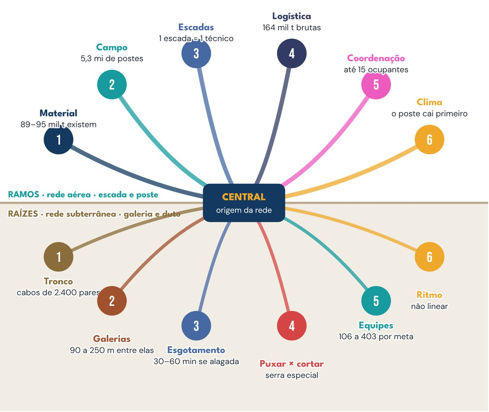

Lei dos Postes
Você acredita que ela pode acabar com o ninho de mafagafos no Brasil?
O ninho de mafagafos não sai do poste nem por decreto. O substitutivo do PL 3220/2019 foi aprovado na Câmara em 4 de novembro e voltou ao Senado. Ele dá prazo e preço. Não diz quem sobe, quem paga e quem prova o que desceu.
Este estudo mostra o que a lei resolve, o que ela deixa de fora e o que precisa existir para que a mudança nos postes seja real e duradoura, com fontes públicas, premissas declaradas e a prática de quem já subiu no poste.
Visão financeira: ler o adendo →O que você encontra
- Os porquês: por que o cabo morto fica no poste e ninguém o retira.
- Os números: o cobre da Oi no aéreo e no subterrâneo, a mão de obra e o calendário real.
- A régua: o que as metas anunciadas de Algar, Vivo e Oi permitem conferir.
- O que precisa existir: sete requisitos e um checklist para o contrato de retirada.
- Um glossário de rede externa: TAR, CEV, galeria, caixa de emenda, drop.
para regularizar de 10 a 15 milhões de postes no ritmo regulatório de 2% a 3% ao ano. A lei não fixa meta de volume.
de técnico para retirar de 4 a 6 lances de cabo morto. Nos contratos de rede externa, é trabalho sem preço.
de drop de fibra que podem ficar no poste a cada ano após cancelamentos, no cenário alto. O modem volta; o cabo fica.
Por que o cabo morto fica no poste
O que a lei diz, e o que não diz
Dá 180 dias e 5 anos e financia o ordenamento. Não fixa meta de volume: no ritmo regulatório de 2% a 3% ao ano, regularizar 10 a 15 milhões de postes leva de 6 a 14 anos.
Como o ninho se forma
A cada troca de operadora, um cabo novo é lançado e o antigo fica. Há casos de 18 instalações no mesmo endereço, e o cliente nunca pede a retirada.
A caixa identifica o cabo
A TAR ou a CEV no poste é o único vínculo do cabo com o dono. O cabo cortado não tem dono visível, e "cada empresa retira o seu" é inviável.
Trabalho sem preço
Instalação é paga por entrega; manutenção, por planta mantida. A retirada de 4 a 6 lances leva de 40 min a 2 h e não cabe em nenhuma das duas lógicas.
O modem volta. O cabo fica
A logística reversa recupera milhões de equipamentos. O drop do cliente que cancelou não aparece em nenhum número divulgado.
A fibra repete o cobre, mais rápido
Com 4 a 7,5 milhões de cancelamentos por ano, o drop morto pode somar de 480 mil a 1,5 milhão de km por ano (cenário).
O mutirão é vitrine, não método
Em Londrina, 3,7 postes por empresa por dia. A avenida fica limpa; o resto do cabo fica nas transversais.
Ramos e raízes
A rede aérea aparece como ramos, acessados com escada. A subterrânea, como raízes, acessadas abrindo a galeria. As duas partem da mesma central, e cada uma tem a sua conta.

Cobre aéreo da Oi
A meta de R$ 1,1 bi pede 116 mil t; restam de 89 a 95 mil na rede. São 5,3 milhões de postes e de 1.840 a 2.760 técnicos em altura. Cada escada é um técnico.
Cobre subterrâneo
Sob a via, o acesso é a galeria. O tronco rende muito por galeria aberta; a ponta, pouco. A meta da Vivo pede de 424 a 1.080 galerias abertas por dia.
Mão de obra e calendário
De 2,5 mil a 6,4 mil pessoas em campo se as frentes coincidirem, das quais até 763 cabistas, em 180 dias úteis por ano, e não 220.
Número sem esteira é declaração
Algar, Vivo e Oi lado a lado: quem, o quê, quando, onde, como, em que ritmo e quem conferiu. Só o caso da Oi, por estar na Justiça, é conferível.
Coordenação e empresa dedicada
Uma ordem de serviço por poste contra dez empresas subindo em dias diferentes. Em Arujá, 15 operadoras dividem a mesma posteação.
Clima, dados e segurança
A internet volta depois da luz. A imagem mostra o cabo, não o dono. E a nova NR-10 só vale em junho de 2027.
Sete requisitos para a retirada virar operação, e não mutirão
- Uma OS por poste
todos os ocupantes na mesma intervenção, com responsável único - Inventário antes de subir
imagem, cadastro, porta ativa e caixa no poste; rota do cabo mapeada - Medição antes e depois
serviço de todos os ocupantes, com código de dano por terceiro - Janela, SLA e aviso únicos
para o trecho, com um só emissor de comunicação - Preço para a retirada
regra explícita entre retirada, instalação e reparo - Pesagem, documento e destino
balança, nota, manifesto e certificado por lote, com rede credenciada - Capacitação desde o dia 1
antes da vigência da nova NR-10
Quando o cabo descer do poste, quem confere que o que desceu é o que estava morto?
O estudo completo traz os porquês, as contas, as premissas, 23 figuras, o glossário e todas as fontes.
Quanto custa o ninho de mafagafos?
Os mesmos números do estudo, lidos como receita, custo, passivo e caixa: o cobre, o drop morto, a mão de obra, o poste coordenado e as metas.
Toda sinergia depende de um sistema. Quem auditou esse sistema?
A Fase Zero técnica antes do closing.
A era dos sub-bastidores
1.878 centrais e R$ 13,6 milhões de CAPEX preservados.
O cobre saiu. A vulnerabilidade persistiu.
Vinte e cinco anos depois, o clima ainda decide quando o Brasil fica offline.
Novos estudos e ensaios saem primeiro no LinkedIn. Acompanhar no LinkedIn →
Diligência técnica e operacional, do inventário ao campo.
Se a sua operação vai regularizar rede aérea, integrar uma aquisição ou auditar inventário, vamos conversar.